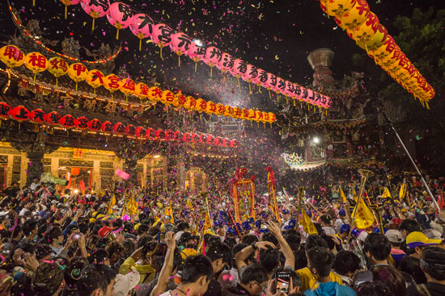
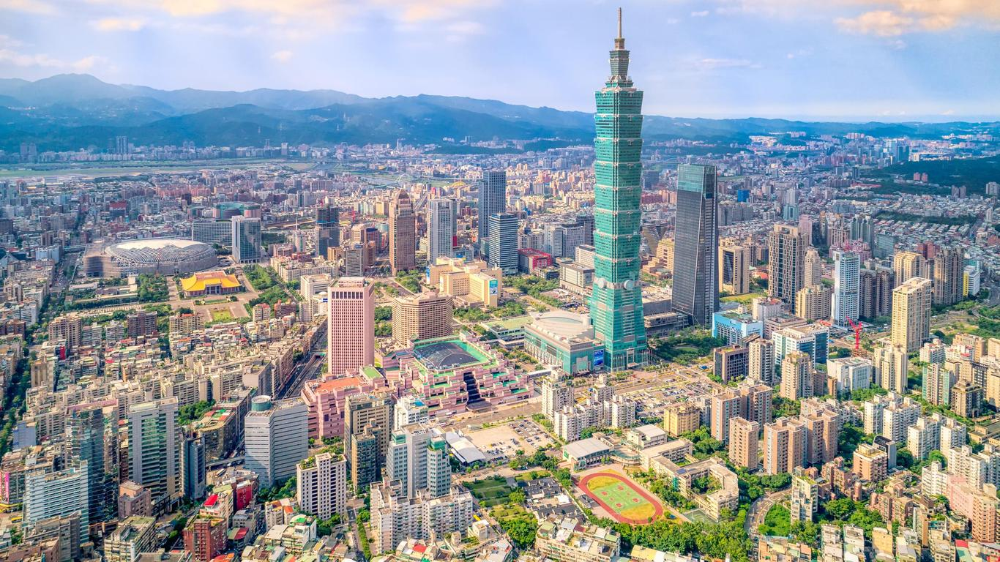

HISTORY
Taiwan: Beginning to 14th century
The island Taiwan has been inhabited for 30000 years, with no known name. Thus was refered as terra incognita until the 16 century. Moreover, Taiwan's first recorded contact with China was in 239 AD, when the Chinese Emperor deployed 10000 man mission to Taiwan for expedition. After the intial expedition, China sent another one in the yea 605 AD. This expedition manage to bring some aboriginal people from Taiwan. These people were taught Chinese back in China. Another expedition occured to scour more information about Taiwan. When China was ruled by the Mongolians during the Yuan Dynasty, Taiwan Straits's P'eng-hu Islands were taken under China's control. Another recorded contact between Taiwan and China is by Ming dynasty's famous explorer, Zheng He, in 1430 AD. He managed to acquire some herbal medicines that were said to have "miracle powers" by the aboriginal people. However, the Chinese settlements in Taiwan faced hostility from the aboriginal people that are native to the island. These natives have cruel practices like head hunting and would take these Chinese's heads. These practices were present to demonstrate a sign of manhood and the qualification to get married. Thus, the Chinese settlements in Taiwan were always on edge for any threats and were organised in a way to put security as top priotity. However, the Chinese settlements are barely able to keep in touch with one another since there was no laws or any governement body that was established on the island then.
Taiwan: During the Golden Age of Discovery (14th - 17th century)
Due to the beautiful landscape of Taiwan that sailers could view from the sea. Hence in 1544, a passing Portuguese ship that sailed through the Taiwan strait named the island "Ilha Formosa", which means beautiful island. The West continued to use this term even after World War II, though they sometimes used the term "Taiwan". Moreover, the Portuguese had also named the P'eng-hu Islands "Pescadores", which meant fishermen, because most of the population there frequently fishes. However, the Portuguese did not claim the island then, and thus, the Dutch managed to take control of Taiwan in 1622, when they landed on the P'eng-hu Islands. In the following year, the Dutch were given a trading post in Taiwan and other privileges by a Chinese official as a trade for them to leave the P'enghu Islands. After 4 years without any Western forces ruling the island, in 1426, the Spanish forces took control of Ji-Lung, also known as Jilong or Keelung located at the northern part of the island, and continued to expand from there shortly after the Japanese settlers' departure from the island.
The Dutch East India Company found a small colony in Taiwan's Southwest Coast (present day Tainan) in 1624. The Dutch named this place Taijowan, and the name eventually evolved into the Mandarin term for the island as a whole, Taiwan. Several years gone by, and they had established another base in the northern part of Taiwan, at Tamsui. The things that the Dutch traded are mainly sugar, rice, pepper, silk and satin, porcelain, nutmeg, and cinnamon. They found great success financially from this operation in Taiwan, and would remain on the island for a much longer time but for Koxinga, a military leader that the Chinese population known him as Zheng Chenggong.
After the expulsion of the Spanish by the Dutch in 1642, they proceeded to put an end to a rebellion by the Chinese inhabitants. Moreover, with the help they received from the aboriginal population, the Dutch managed to establish control over the whole island. This means that Taiwan had officially became a Dutch colony and governed by the Dutch East India Company. The Company expanded their operations, that included digging wells, conducting land surveys, and creating the basis for expanding trades to China and the rest of East Asia. Moreover, it brought in more modern farming techniques and taught the use of oxen to till the fields. To further strengthen its ties to the aboriginal people, the Company representatives developed a writeen langguage for communication, which eventually cause a lot of the aboriginal population to convert to Christianity.
Under the Dutch's control, the aboriginal population massively outnumbered the Chinese population. Even though the Dutch encouraged Chinese immigration, the Chinese were skeptical and unloyal to the Dutch. Moreover, Ming-dynasty China was being threatened by the Manchu (inhabitants of Manchuria) then. Later on in 1644m they took over Beijing and formed the Qing (Manchu) dynasty. However, the resistance against the Manchu forced continued in Southeastern China, under the command of the pirate leader Zheng Zhilong, by the remnant Ming naval forces. But not long after, Zheng became loyal to the Qing, completely different from his son's alignment.
Zheng's son, Zheng Chenggong (Koxinga), who was born to a Japanese mother in Japan. He launched a prolonged campaign of resistance against the Manchu from bases along the Fujian coast of China, but it failed by 1661. This caused him to focus on Taiwan. He took a huge number of Chinese to Taiwan, who are mostly from his army. Later that year, Zheng then launched an attack on the Dutch stronghold in Zeelandia (near present-day Tainan) and surrounded it with his men, forcing the Dutch to surrender in 1662 and were evacuated, effectively ending the Dutch's control over Taiwan. This is also the first time where a "liberation" of a Western colony was recorded. This successful attack was only possible due to disease, hunger and a worsening military situation being rampent on the island.
Koxinga's victory is short lived. He changed the name of Taijowan to Anping before dying of malaria. The Kingdom of Dongning, a state he had established, lasted 21 years. However, when the Qing forces attacked in 1683, Koxinga's teenage grandson quickly surrendered and the island became part of the Chinese empire.
Taiwan under the Chinese Empire 1683 - 1895
After the Qing empire took control of Taiwan, they didn't really know what to do with it. Since the people who had been fighting against them (like Koxinga and his group) were no longer a problem, some officials wanted to just give up the island. But in the end, the emperor decided to keep Taiwan. At first, people from China weren't allowed to immigrate to Taiwan. But since life was very hard in Fujian, a nearby part of China, thus, many poor people moved to Taiwan in hopes for a better life. In the 1700s, more and more Chinese towns started growing in Taiwan—places like Chiayi, Hsinchu, and Taipei. People also built many important temples. But the government was very unfair and corrupted, so Taiwan often had no proper law and order. This made many people became bandits (like robbers), and different groups fought each other and the island's native Austronesian people over land and water. By 1811, more than two million people lived in Taiwan. Many Chinese men married indigenous women, and that helped mix the communities. In fact, scientists later found out that about 3 out of every 4 Taiwanese people have some Austronesian roots in their blood. In the second half of the 1800s, countries like Japan and some Western nations became interested in Taiwan because of its location and resources. In 1859, Christian missionaries came to Taiwan again for the first time since the Dutch were there. Then in 1871, after a ship crashed near today's Kenting National Park, Japan briefly invaded. After that, places like Keelung, Danshui, Anping, and Kaohsiung became “treaty ports.” This meant people from countries like Britain, Russia, and Japan could trade there and were protected from local laws. Later on, during a war between China and France over Vietnam (in 1884 to 1885), the French soldiers took over parts of Taiwan. This made the Chinese emperor realize Taiwan was important. He ordered the building of forts and a railway, and finally, Taiwan was made a province of its own, instead of just being a part of Fujian.
Taiwan under the Japanese rule 1895 - 1945
In 1894, a war broke out between China and Japan. Although Taiwan was out of the picture at first, but when China lost, they had to give Taiwan and the nearby Penghu islands to Japan. Some people in Taiwan didn't want to be ruled by Japan, so they resisted. The Japanese army took six months to stop them, and many soldiers died—mostly from sickness like malaria and cholera, not from fighting. Because of this, Japan worked hard to improve public health in Taiwan. They also reduced opium use, built better roads, and expanded the train system. One famous railway to Alishan was built during this time. However, Japan also took Taiwan's natural resources like coal and special trees that made camphor, which made many Taiwanese angry. The indigenous people worse treatments. The Japanese took their land and guns, and forced them to work on projects. In 1930, a tribal leader named Mona Rudao led a rebellion. His fighters attacked a school and Japanese soldiers. When they knew they couldn't win, many of them chose to die rather than giving up. This story was turned into a movie called Warriors of the Rainbow: Seediq Bale. During World War II, Japan used Taiwan as a base to attack other parts of Asia. They also held many prisoners from other countries in camps on the island, and sadly, many died from hunger and overworking. Over 200,000 Taiwanese were forced to join Japan's military. One of them was the older brother of Lee Teng-hui, who later became Taiwan's president. When the war ended, Japan had to give up all its colonies, including Taiwan. But even today, you can still feel Japan's influence in Taiwan. Many old buildings from that time are still standing, and Taiwanese people still enjoy Japanese food, fashion, and culture. Although Taiwan's economy was badly damaged during the war and thousands of people died from air raids, many Taiwanese were still hopeful about what their future could be like after the war ended.
Taiwan post-World War II 1945 - 1975
After Japan left Taiwan at the end of World War II, the island became part of the Republic of China (ROC). The ROC was a government that started in China in 1911 when the last emperor was removed by a man named Sun Yat-sen. By this time, the leader of the ROC was Chiang Kai-shek, who also led a group called the KMT (the Chinese Nationalist Party). Sadly, the person Chiang put in charge of Taiwan didn't do a good job. The economy was badly ran, and the government was corrupted. By 1947, many people in Taiwan were upset. One day in Taipei, a group of government agents beat a woman who was selling cigarettes without a license. A crowd tried to help her, and that sparked a big protest. It soon turned into a major rebellion. The governor of Taiwan pretended to talk things out, but instead waited for backup soldiers. When they came, thousands of people were killed—even some who were innocent. This tragedy is called the 2-28 Incident because it happened on February 28. At the same time in China, Chiang and the KMT were losing a war against the Communists, led by Mao Zedong. In 1949, Chiang and many of his followers—about 1.5 million people—moved to Taiwan, bringing gold, art, and important treasures with them. They set up a new government in Taipei and said they were still the real government of all of China. But no one was allowed to speak out against them. For many years, people who disagreed were jailed or even killed. To avoid repeating their mistakes from mainland China, the new leaders in Taiwan started land reform to help poor farmers. This plan worked really well. Farmers had more control over their land, and former landowners used the money they got to build factories. Taiwan's biggest export used to be sugar, but over time, making things in factories became more important. As Taiwan grew richer, life got better. People started buying things like rice cookers and refrigerators. From 1950 to 1970, the population almost doubled, reaching 14.6 million. Bicycles and ox carts disappeared from the roads and were replaced by motorcycles and cars.
Taiwan's status since 1975
A few years after Chiang Kai-shek's death in 1975, in 1978, his son Chiang Ching-kuo became the next president. Around that same time, the United States, a global superpower then, stopped officially establishing relations to Taiwan band turned its attention to China instead. Even though this was tough for Taiwan, Chiang Ching-kuo started to make the government more fair. Before this, the ruling party (called the KMT) had all the power. But during the 1980s, they began allowing more freedom. They ended martial law (which meant strict military-style rules), and people were finally allowed to start new political parties. Today, Taiwan has over 200 political parties, though only three are big enough to be in parliament. The news media also became more open and free to speak the truth. People were allowed to travel abroad, and trips to places like China became popular. When Chiang Ching-kuo died in 1988, his vice president, Lee Teng-hui, became president. He was the first president who was actually born in Taiwan. He had studied farming and economics in Japan and the U.S. and believed in making Taiwan a true democracy. Lee made big changes. He retired old lawmakers who had been chosen back in 1948 on the mainland and hadn't even seen their home districts since the Communists took over China. Now, Taiwan's leaders and newspapers started to reflect what the people really thought. In 1996, Lee became the first president of Taiwan to be chosen through a real public election. Then in 2000, a different political party, called the Democratic Progressive Party (DPP), won the presidency for the first time. In 2008, the presidency changed hands again, this time going back to the KMT—showing that Taiwan had truly become a working democracy where leaders could change peacefully.
Present day Taiwan
In 2016 the DPP won both the presidential and parliamentary elections. DPP President Tsai Ing-wen (the first female leader in Asia who isn't the daughter, sister, or wife of a previous leader) won re-election in 2020. A fortnight into 2024 the DPP retained the presidency, former Vice President William Lai defeating two strong opposition candidates to claim victory. The DPP, however, failed to secure a parliamentary majority and it's uncertain if the KMT will try to obstruct DPP policies, as they often did between 2000 and 2008. Taiwan enjoyed an economic boom from the 1980s until the Asian Financial Crisis of 1997, powered by high-tech products such as computer peripherals. Since then growth has been slower, but Taiwan has made progress on other fronts, introducing a much-admired National Health Insurance system and social welfare programs for the disabled, the elderly, and indigenous people. In addition to its tricky relationship with China, in the 2020s Taiwan faces challenges that include a rapidly ageing population and shortages of land, labour, and water.
CULTURE

Brief summary:
Taiwanese culture is a fusion of Chinese, Austronesian, Japanese, and Western influences together. Because there was no Communist rule over Taiwan ever in history, there was no Communist oppression experienced by the country. Hence, travellers and locals could continue to see traditional religious practices and ancient customs that had been wiped out from the mainland here in Taiwan. This is also why sometimes Taiwan is said to be more Chinese than China while simultaneously being much more than Chinese.
Family
Members of the family are very close to one another, and many Taiwanese people still chose to live close to their parent's house or just be under the same roof as them. Traditionally, the oldest son and his wife would living together with his parents. However, this tradition is getting less common not only because of fewer marriages and increasing number of child-free marriages. Some women would also object the idea of living together with in-laws after marriage due to potential ideology and routine clashes which could strain the relationship. Moreover, modern career paths makes it harder for young people to stay closer to their hometown. However, some newlyweds would feel the pressure living in the city area due to low pay and high cost of housing and living. On the other hand, in rural areas of the country, it's more common to find 3 generations living under 1 roof. No matter the cost of the housing, many parents would give a chunk of their fortune to their children to help them pay for their house and some parents would even fully pay for their children's education in university as well!
Ancestry
Taiwanese people takes respecting their ancestors very seriously, with the idea of sincerity towards respecting their ancestors linking with the amount of offerings of food made and joss paper burnt. Ancestor worship overpowers their religions (Buddhism, Taoism etc.). But it's said that Christianity's oppoisition to ancestor worship is a major reason why the religion is not very popular in Taiwan. The main reason for ancestor worship is wishing for those who had passed with the means of having a happy existence in the afterlife. Ancestors are both loved and feared by the Taiwanese. If they are neglected by their descendants, they would visit and harm them. Moreover, some Taiwanese people have Ancestor altars in their homes, usually in the living room (or upstairs) to have their ancestors watch over their household and receive their ancestor's direct blessings.
Martial Arts
Martial arts are part and parcel in many Taiwanese events. Neimen, a small town in Kaohsiung's hinterland, is now a famous spot for large-scale martial arts performance during the annual Song Jiang Battle Array. The festival, held during the spring of every year, around the time of Guanyin's birthday, aims to celebrate the tradition of temple-affiliated militias. The tradition's presence has been stronger than ever in Neimen since the late 17th century. This is because Neimen was established really close to indigenous tribes which post serious threats to Chinese people then, by raiding the villages. Hence, military skills passed down from generations were honed and adapted to become more useful. Battle-array members are expected to possess core values like physical strength, loyalty, and mutual support. Even if they are engaged in ritualised dueling or drilling, you can see the amazing coordination, speed and skills.
Qixi Coming-of-Age Ceremony
The Qixi Coming-of-Age Ceremony is an event celebrated in Tainan on the 7th day of the 7th lunar month each year since the 18th century. The origin story of this event happened back when Taiwan was part of the Qing Empire, where families would celebrate when their turned 16 years old. This is because he would be fully paid at his workplace, instead of the half pay when he's 15 or younger.
Kailong Temple's ritual
There is also a ritual situated at the Kailong Temple, where boys and girls who have just turned 16 years old to crawl under an altar whilst dressed in special outfit, footwear and hats. Moreover, their parents need to make offerings of chicken, duck and red rice cake. After both parent and child's (or childrens') participation, they can horseback to the city's beautiful Confucius Temple to offer incense to China's greatest philosopher.
Mazu's birthday
They main event of Mazu's birthday is the 350 kilometer trek from Dajia, Taichung county, to Xingang, Chiayi county, and back again. Dajia's main Mazu icon would be carried by men in the entire distance, whilst crowds of religious participants would follow their footsteps. Believers does this long walk in hopes to gain Mazu's blessings by either touching her palanquin or lying prostrate on the road ahead of the procession so the icon is carried over their bodies.
General temple events
In some important and grand temple-related events (like during Chinese New Year), there will be temple parades. These devotees would often block the roads though, causing roads to be extra crowded with devotees on top of the huge number of cars pedestrians. A typical inspection parade would start and end at a temple, and its main event is the transportation of an effigy in a palanquin. This may be a wooden sedan chair or, in recent years, an ornate wheeled buggy with flashing LEDs and loudspeakers attached to it. The god is carried whilst being the followers would carry banners and placards or even play gongs, pipes and huge drums. This makes the whole even very loud and active. As the deity inspects his earthly domain, there would be many stops made to bless businesses or households. At each stop. strings of firecrackers will be detonated and joss papers will be burned while the fireworks are launched to the sky. Once those rites are done, the parade will continue on.
Calligraphy
Taiwanese calligraphy reflects a rich blend of influences. Originally shaped by Chinese traditions and Qing dynasty calligraphers who migrated to Taiwan, it later absorbed Japanese and Western elements during the Japanese colonial period (1895 to 1945). The launch of the Taiwan Fine Art Exhibition in 1927, encouraged the fusion of Japanese and Western painting techniques, especially in ink art. Since the 1980s, Taiwanese calligraphy has continued to evolve, drawing from Japanese, Korean, and Western postmodern art. Contemporary artists now blend traditional calligraphic spirit with personal creativity, experimenting with vibrant colors, abstract styles, and three-dimensional forms. In 2021, Taiwan opened its first public calligraphy-themed art center, the Hengshan Calligraphy Art Center (HCAC), to preserve and promote both traditional and modern Taiwanese calligraphy.
Religious Art
Taiwan's temples contains many unique artworks that represents the height of art for its time. A huge chunk of fortune in traditional Taiwanese society went into buying and decorating both temples and tombs. Visitor and locals can also see the often amazing wood carvings and painting of gods and depiction of Guan Yu at the doors of Buddist and Taoist temples. Due to years of exposure of smoke from the incense and burning joss paper, these temples often have to undergo expensive restoration work. Moreover, religious architexture were also adapted to modern materials with concrete and have replace wood for structural components in typhoon prone areas.
Indigenous Arts
Taiwan's indigenous art is expressed through weaving, pottery, wood carving, and music, each reflecting the unique traditions of various tribes. Museums like the Lan Yang Museum and Taitung Taiwan History Pre-Cultural Museum showcase these cultural expressions. Firstly, Wood Carving gained prominence in the 1990s, especially among the Paiwan, Tao (in Lanyu), and Kavalan tribes. The Paiwan tribe is renowned for intricate carvings on household and ceremonial items, while the Tao tribe is noted for the iconic "Lanyu Wooden Boat." Secondly, Weaving, using bamboo or vine, was essential for making baskets for storage and transport, especially suited for Taiwan's humid climate. Thirdly, Pottery, such as the Paiwan "Reretan" kettle, was used in daily life and rituals. Though the pottery-making tradition has declined, it was once a rich part of Paiwan culture. Fourthly, Music plays a central role in indigenous life, using traditional instruments like the mouth organ, nose flute, and wooden clapper, often performed with bamboo rhythms. Despite challenges like a shrinking number of artists and cultural successors, Taiwan's indigenous art remains a vital and vibrant part of the island's diverse heritage.
Performing Arts
Glove Puppetry
The roots of Glove puppetry in Taiwan could be traced back to 17th century, when the Chinese immigrants brought the craft over. Since then, it established itself in a distinct contemporary style unique to Taiwan. Most notably, Pili International Multimedia, is known for its puppet show, Pili. Their contemporary Taiwanese puppets from 1993 onwards, are bigger sized and more lifelike than the previous ones. These puppets are designed to look more human and realistic. One of the more well known character in this Pili franchise is Su Huan-Jen, who is crafted from heavy cloth, real hair and glass eyeballs. Due to the ridiculous amount of details that placed on each puppet, they even have a big loyal fanbase in the country. There is also a shift from 6 stereotypical role depictions within the glove puppetry (Sheng, Dan, Jing, Mo, Chou, Za), to a more thoughtful and developed and a variety of different personas beyond just these archetypes. Pili puppetry had also dived into usage of Animation with 3D puppetry, where some animations were involved alongside some puppets which are similar to stop motion techniques in filmaking. Moreover, the puppeteers had also started to use 2 hands to control the puppets during performance instead of just 1 hand. Thus, propelling glove puppetry to greater heights.
Dance
Taiwan, located at a key maritime crossroads in the Indo-Pacific, has a long history of human activity dating back to the Paleolithic Changbin culture. Its history includes the Dutch Formosa era, the Kingdom of Tungning, Japanese rule, and the modern period beginning in 1949 with the Nationalist government's arrival. Dance in Taiwan—deeply tied to the human body as a form of expression—has evolved alongside the island's diverse ethnic groups and has been shaped by its geography and historical changes, reflecting shifts in politics, economy, society, and culture.
Music
Taiwan's music reflects its rich cultural diversity and historical changes. Influenced by Chinese folk traditions, indigenous tribal art, and Western classical and pop music, Taiwan has developed a unique and mixed musical style. It is also a major center for Mandopop (also known as Mandarin pop music).
Taiwanese Opera
Taiwanese opera, also known as Ke-Tse or Hokkien opera, is a traditional drama form that originated in Taiwan. Performed in Taiwanese Hokkien, it blends literary and colloquial styles and draws from southern Fujian folk tales and Chinese legends. Over time, modern stories set in Taiwan have been added. Influenced by Taiwan's political history, it reflects the island's cultural identity and has spread to other Hokkien-speaking regions like Singapore, Malaysia, and Fujian, China.
Street Art
Street art has been present in Taiwan since the 1990s, with popular locations including Taipei's Ximending, Treasure Hill, and American Street. Villages like Rainbow Village and Ruan Chiao have transformed into art spaces, with elderly residents painting murals to attract youth and tourists. Moreover, study conducted in 2008 have found that most Taiwanese graffiti artists come from middle-class backgrounds and are motivated by self-expression and identity rather than social or political protest. Their art reflects a shift among youth—from conforming to societal success standards to seeking self-realisation and community through creative expression.
Taiwanese culture quiz!
REGIONS
Taipei
Taipei, officially Taipei City, is the capital and a special municipality of Taiwan, located in the north of the island. Surrounded by New Taipei City, it lies in the Taipei Basin, bordered by the Keelung, Xindian, and Tamsui rivers. As of March 2023, Taipei has a population of about 2.5 million, while its metro area—Greater Taipei, including New Taipei and Keelung—hosts over 7 million people, making it one of the most populous urban areas globally.Originally settled in 1709, Taipei has served as a political center since the late Qing dynasty in 1887. It was the capital during Japanese rule (1895 to 1945) and became the seat of the Republic of China (ROC) central government in 1949. It became Taiwan's first special municipality in 1967. Taipei is Taiwan's economic, political, educational, and cultural center, known for its high-tech industry, extensive transport infrastructure, and landmarks such as Taipei 101, Chiang Kai-shek Memorial Hall, National Palace Museum, and Lungshan Temple. Popular areas include Ximending and various night markets, with scenic nature spots like Yangmingshan and Maokong. The city uses UTC+8 time, has the postal code range 100 to 116, and the calling code (0)2. Its mayor is Chiang Wan-an (KMT). In international contexts, "Taipei" often represents Taiwan's government due to Taiwan's complex political status, with "Chinese Taipei" used in global events like the Olympics.
New Taipei
New Taipei City is a special municipality in northern Taiwan and the most populous city in the country, with a population of around 4 million as of January 2023. It is also the second-largest special municipality by area (after Kaohsiung) and completely surrounds Taipei City, with Banqiao District as its administrative center and main commercial hub. It borders Keelung, Yilan County, and Taoyuan. Historically, the region was home to indigenous Ketagalan people before the Spanish and Dutch established outposts in Tamsui in 1626. Under the Qing dynasty, Tamsui became a key treaty port in 1858 and later handled over 60% of Taiwan's trade by the 1890s. During Japanese rule, it was part of Taihoku Prefecture. After 1945, it became Taipei County, later excluding Taipei City, Keelung, and Yilan. On 25 December 2010, it was elevated to a special municipality and renamed New Taipei City. New Taipei City is a polycentric urban area, formed by merging multiple suburban and commuter districts. It is a key part of the Taipei-Keelung metropolitan area, covering the Taipei Basin and stretching to the Xueshan Mountains. The city has excellent transport infrastructure, including metro systems, high-speed rail, and access to Taoyuan International Airport. It also hosts the Port of Taipei, an artificial seaport in Bali District.
Keelung
Keelung City, also known as Chilung or Jilong, is a major port city in northeastern Taiwan. It is part of the Taipei-Keelung metropolitan area, along with New Taipei City and Taipei. Nicknamed "The Rainy Port" due to its frequent rainfall and maritime significance, Keelung is Taiwan's second-largest seaport (after Kaohsiung) and was once the 7th busiest port in the world (1984). The city's history dates back to 1626, when the Spanish built Fort San Salvador in the area, which was originally inhabited by Taiwanese indigenous peoples. Control later shifted to the Qing dynasty, and Keelung saw military conflicts involving European powers during the First Opium War and the Sino-French War in the 19th century. After Taiwan was ceded to Japan in 1895, the city—then known as Kirun—was developed under Japanese rule. Following Japan's defeat in World War II, Keelung became part of Taiwan Province under the Republic of China. In 2018, the city became a first-level administrative division after the provincial government was abolished.
Taoyuan
Taoyuan is a special municipality in northwestern Taiwan, bordering New Taipei City, Yilan County, and Hsinchu County. Its administrative center is Taoyuan District, which, together with Zhongli District, forms a large metropolitan area. Originally a county, Taoyuan was upgraded to special municipality status in 2014. The name "Taoyuan" means "peach garden", reflecting the area's past abundance of peach trees. The city has evolved from a satellite city of Taipei into Taiwan's fourth-largest metropolitan area and fifth most populous city. Taoyuan is known for its industrial parks, technology company headquarters, and rapid population growth, partly due to its proximity to Taipei and lower living costs. It also has a significant population of 116,000 foreign workers, mainly from Southeast Asia, working in factories and caregiving roles. The city is home to Taoyuan International Airport, Taiwan's largest airport, which serves Taipei and northern Taiwan.
Hsinchu
Hsinchu City is a northwestern coastal city in Taiwan, bordering the Taiwan Strait to the west, Hsinchu County to the north and east, and Miaoli County to the south. With an estimated population of 450,655, it is the most populous city in Taiwan that is not a special municipality. Nicknamed the "Windy City", it experiences strong northeastern monsoons in autumn and winter. Originally settled by Taiwanese indigenous peoples, the area was called "Tek-kham" by Hokkien and Hakka settlers. The city was formally established by Han Chinese in 1711, renamed "Hsinchu" in 1878, and later served as the capital of Shinchiku Prefecture under Japanese rule (1895 to 1945), which included today's Hsinchu, Taoyuan, and Miaoli. Under the Republic of China, Hsinchu became a provincial city in 1945. In 1980, the government founded the Hsinchu Science Park, making the city a major hub for semiconductor manufacturing. Major companies like TSMC, MediaTek, and UMC have headquarters there. Hsinchu is also a cultural and academic center, home to historic sites like the Chenghuang Temple (built in 1747), and prestigious universities such as National Tsing Hua University and National Yang Ming Chiao Tung University, both located near the science park.
Miaoli
Miaoli is a county in western Taiwan and is bordered by both Hsinchu County and Hsinchu City to the north, by Taichung to the south, and by the Taiwan Strait to the west. Miaoli is classified as "central Taiwan" by the National Development Council and "northern Taiwan" by the Taiwan Central Weather Bureau. Its capital is Miaoli City, and is also known as "Mountain Town" due to being surrounded by a number of mountains nearby, making it a great destination for hiking!
Changhua
Changhua is a Taiwanese county that is the smallest on the main island of Taiwan by area, and the fourth smallest in the country. With a total population of 1.24 million, Changhua County is the most populous county in the Republic of China. Its capital is Changhua City and it is part of the Taichung to Changhua metropolitan area.
Nantou
Nantou County is Taiwan's second-largest county by area and the only landlocked county in the country, located in central Taiwan. Its name comes from the Hoanya indigenous word "Ramtau." Known for its mountainous terrain and tourism, Nantou is home to Sun Moon Lake, the largest natural lake in Taiwan, as well as other popular attractions such as Aowanda, Formosan Aboriginal Culture Village, Hehuanshan, Paper Dome, Qingjing Farm, Shanlinxi, Shuiyuan Suspension Bridge, and Xitou. Major towns include Nantou City and Puli Town. The broad-tailed swallowtail butterfly (Agehana maraho) is the county's official butterfly. Nantou is also renowned for producing Dong Ding tea, a high-quality oolong tea famous across Taiwan.
Yunlin
Yunlin is a county in western Taiwan. All of Taiwan Strait to the west is bordered by Yunlin County. Moreover, Yunlin is part of the Chianan Plain, a flat land known for its agriculture. Its agricultural products includes pomelo, tea leaves, suan cai, papaya and melon. Not only that, with the vast amount of rivers Yunlin has, it has potential for hydroelectricity. Furthermore, Douliu is Yunlin's biggest and capital city. It is also the only county in Taiwan where no city with the same name exists. Unfortunately, compared to other counties, Yunlin is the least developed on the West coast, and is facing emigration issues.
Chiayi
Chiayi City is located on the Chianan Plain in southwestern Taiwan and is surrounded by Chiayi County. As of January 2023, it has a population of 263,188. The city experiences a warm, humid subtropical climate, especially in summer. Historically known as Tirosen, the area was first inhabited by the Hoanya indigenous people, and later governed by the Dutch and the Kingdom of Tungning. Under the Qing dynasty, it was part of Zhuluo County, renamed Kagee in 1787. During Japanese rule, it was called Kagi, and much of the city was destroyed in the 1906 earthquake. It became part of Tainan Prefecture in 1920. After Japan's surrender in 1945, the Republic of China took over, naming it Chiayi City and administering it as a provincial city. It was temporarily downgraded in 1950 to a county-administered city within Chiayi County, but restored as a provincial city in 1982. Since the streamlining of Taiwan Province in 1998, it has been governed directly by the Executive Yuan. Chiayi is known for being the gateway to the Alishan National Scenic Area and features landmarks from the Japanese colonial era, including the Alishan Forest Railway, which begins in the city, and several Japanese temples.
Tainan
Tainan City is a special municipality in southern Taiwan, located on the western coast facing the Taiwan Strait. It is Taiwan's oldest city, often called the "prefectural capital" due to its long history as the island's political center during the Dutch, Kingdom of Tungning, and Qing dynasty periods. It is also nicknamed the "Phoenix City" for its legacy of resilience and renewal, and is recognized as a "Sufficiency"-level global city by the Globalization and World Cities Research Network. Founded over 400 years ago, Tainan began as Fort Zeelandia, established by the Dutch East India Company (VOC). It became the capital of Koxinga's Kingdom of Tungning after the Dutch were expelled in 1662, and then served as the capital under the Qing dynasty until 1887, when the capital moved first to Taichung, and later to Taipei. After Taiwan was ceded to Japan in 1895, Tainan briefly served as the second capital of the Republic of Formosa, until it was taken by Japanese forces. Under Japanese rule, it was the seat of Tainan Prefecture. Post-World War II, the Republic of China took over in 1945, making Tainan a provincial city until 2010, when it was merged with Tainan County to become a special municipality. Tainan is considered one of Taiwan's cultural capitals, known for its rich traditions, folk customs, street food, and historic architecture. It is home to the first Confucian temple in Taiwan (built in 1665), remnants of old city gates, and more Buddhist and Taoist temples than any other city on the island. The city's former name, Tayouan, is believed to be the origin of the name "Taiwan".
Kaohsiung
Kaohsiung City is a special municipality in southern Taiwan, spanning from its coastal urban center to the Yushan Mountain Range, with a total area of 2,952 km². As of October 2023, it has a population of approximately 2.73 million, making it Taiwan's third most populous city and the largest city in the south. Originally founded in the 17th century as a small trading village called Takau, Kaohsiung has developed into the political and economic hub of southern Taiwan. Its key industries include manufacturing, steel-making, oil refining, freight transport, and shipbuilding. It is classified as a "Sufficiency" level global city by the Globalization and World Cities Research Network. Kaohsiung holds major strategic and economic importance as Taiwan's primary port city—the Port of Kaohsiung is the largest and busiest harbor in the country, handling over 67% of Taiwan's container exports and imports. The city is also served by Kaohsiung International Airport, the second busiest airport in Taiwan. Kaohsiung is well-connected through high-speed and conventional rail, as well as national freeways. It is home to the Republic of China Navy fleet headquarters and naval academy. Recent developments such as the Pier-2 Art Center, Kaohsiung Music Center, and National Kaohsiung Center for the Arts have been central to boosting its cultural and tourism industries.
Pingtung
Pingtung is a county located in southern Taiwan. It has a warm tropical monsoon climate and is known for its agriculture and tourism. Furthermore, Taiwan's oldest national park, Kenting National Park, is located here too! Lastly, the county seat is Pingtung City.
TAIWAN

Brief description:
Hi there! Welcome to my website about Taiwan. I hope that the information provided in this website could give you a better understanding about Taiwan. From the country's long and rich history, to its culture. Enjoy your time here!